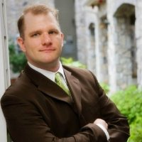

I am a developer who is currently working at Staples as a Sr. Developer on the A/B Testing Team. My Primary role is to design and develop POCs and tests for Staples and track those tests using in-depth analytics to determine if the concept would be worth keeping or expanding. For this task, I generally use JQuery, HTML5 and CSS3 to develop these tests and use Adobe Test and Target as our application to deliver and measure these tests.
While I have only been at Staples for a year, I have developed and launched over 40 tests. In addition, I have been called on to help out with some architectural type decisions regarding our entire Staples.com website as we start moving towards a more responsive layout that will be driven on an MEAN stack. One of the challenges that my team will be facing is how we can inject out Tests efficiently using Angular rather than through JQuery DOM manipulation. In addition to this, I also take some pride in being able to reduce our team tool costs (via Adobe) by 53% by reducing unnecessary server calls to the Adobe Target servers (we get charged per server call). I was the first person in over 4 years of Test and Target being at Staples to discover these unnecessary calls that were costing the company an estimated 1.5 million per year.
My background before Staples is diverse. I started my career at Raytheon where I was a C++ developer for most of my seven years there, writing GUIs for two major radar projects. Raytheon showed me how to be an engineer, and I am eternally grateful to them for the experience.
Since Leaving Raytheon, I have focused mostly on web development - working primarily in eCommerce with a brief stint leading major portal development project for Hanover Insurance (TAP). I have been blessed to work with small, large, and medium sized companies throughout my career and have had the opportunity to work with a wide range of platforms and languages - from WordPress to Websphere commerce, Drupal, and custom LAMP applications. My focus now is on learning the MEAN stack - and I am hoping that my next role will allow me to apply some of what I am learning with those new frameworks.
For fun, I am a drummer/vocalist for a small progressive-rock trio, whom I have been playing with for 20 years now. I am an avid water skier, sitting on the board fo directors for the Nipmuc Water Ski club in Webster. I am also a huge animal lover and am the proud "human" for one dog and two cats, but I would love to add another puppy to the mix if I can convince my wife :). I also have a very fun and active two year old girl, who is my world.
If you want to know more about my professional background - my LinkedIn Profile is probably the best place to go.